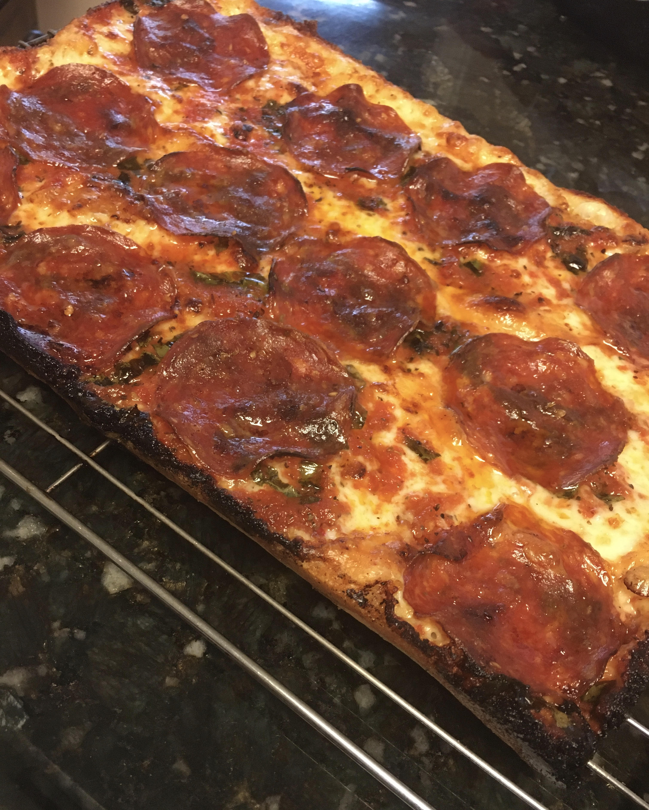

We're going to be making a Detriot Style Pizza using a Lloyd's Detroit style pan.
- Bianco Di Napoli or San Marzano Canned Tomatoes
- Salt
- Sugar
- Crushed Red Chili Flakes
- Olive Oil
- Oregano
- Basil
- Garlic
- Bread Flour
- Yeast
- Salt
- Sugar
- Olive Oil
- Water
- Whole Milk Low Moisture Mozzarella
- Monterey Jack Cheese
- Bell Pepper
- Pepperoni
- Maitake Mushroom
- Red Onion
- Yellow Onion
- Hot Honey
- First we're going to be making the pizza dough. Put in a bowl 240g of warm water, and then add 2g of rapid rise yeast.
- Next were going to add 5g of salt, 2g of sugar, 1 tbsp of olive oil, and 335g of bread flour to the bowl. Mix everything in the bowl together with a spoon and then start kneading the dough for around 8 minutes. Cover the dough and let it rest for 30 mintues, then begin kneading the dough again. After that let the dough rest for 2 hours.
- We're going to be making the sauce next. Strain your canned tomatoes and then put them into a food processor or a blender. Add 2g of sugar, 2 tbsp of olive oil, 2 garlic cloves, 2g of red chili flakes, 7g of salt, 2g of dried basil, 3g of dried oregano. Blend it until its to your desired consistency and let it rest in your fridge.
- Once the two hours have passed take your risen dough and put it into your Lloyd pan that's coated in olive oil. Cover the Lloyd pan and let it rest for another two hours.
- Turn your oven to 550 fahrenheit and let it heat up for an hour. While your waiting grate your two cheeses and thinly slice your pepper and onions. Then saute your maitake mushrooms and yellow onions in a pan with olive oil and salt.
- After the two hours are up push the dough to the edges of the pan. Layer the sauted mushrooms and onions first, then cover ever part of the pan with your two cheese blend. After that you can add three lines of sauce to your dough, then finally add your red onions, pepperoni, and peppers above the sauce.
- Put it into the oven and let it cook for around 15-20 minutes. Once done use a spatula to take it out and let it rest on a rack.
- Finally drizzle hot honey over the pizza.